Ficha técnica
| Tipo | Introdução + Demonstração + Atividade Prática |
| Duração | 14 minutos |
| Ferramenta | Claude Skills (acionada dentro do Project Financeiro Lumina) |
| Pré-requisitos | AP01 e AP02 concluídas (Project Financeiro Lumina configurado e Skill gerar-dre-lumina instalada) · Code Execution and File Creation habilitado em Settings > Capabilities · DRE de outubro/2025 já gerado na conversa da AP02 |
Esta AP não inicia uma conversa nova — ela continua na mesma conversa onde você gerou o DRE de outubro/2025 na AP02. Sem essa conversa, o Claude não tem o DRE no contexto e a análise não funciona.
Antes de começar, veja o que você vai conquistar ao final desta atividade prática — e como ela se conecta ao destino final da aula A10.
Entregável final da AP03: uma Skill chamada "analisar-dre-lumina" instalada na sua conta Claude — capaz de pegar o DRE estruturado da AP02 e devolver uma análise narrativa executiva (formato Executive Summary CFO-ready) comparando com o mês anterior, identificando root causes das variações e propondo ações acionáveis.
A análise narrativa é o segundo componente do Painel Financeiro Lumina que você vai entregar ao final da aula. Sem análise narrativa, o painel é só uma tabela de números — com ela, vira um produto executivo que CFO e diretoria conseguem ler em 30 segundos e saber o que precisam decidir.
Na AP04 você vai criar a Skill que combina o DRE estruturado (AP02) + análise narrativa (AP03) num único arquivo HTML autocontido — esse será o painel final pronto para apresentar à liderança.
Instalar na sua conta Claude uma Skill chamada "analisar-dre-lumina" que recebe o DRE estruturado da rede + DRE do mês anterior carregado como referência no Project, e devolve uma análise narrativa executiva no padrão de FP&A de empresas grandes.
A análise começa pelo Executive Summary (3 frases respondendo "como fomos / o que se preocupar / o que fazer"), seguido de análise das margens com root causes e recomendações, movimentos materiais nas linhas do DRE, olhar prospectivo para o próximo mês, e pontos de atenção específicos para o CFO investigar.
Estrutura do output em 5 blocos
- Executive Summary — 3 frases respondendo em 30 segundos: como fomos, o que se preocupar, o que fazer
- Análise das 3 margens — bruta, operacional, líquida, com root causes e recomendações
- Movimentos materiais nas linhas do DRE — variações relevantes (acima de threshold de materialidade) explicadas
- Olhar prospectivo — o que esperar do próximo mês considerando sazonalidade e tendências
- Pontos de atenção para o CFO — lista priorizada de itens que merecem investigação adicional
Quando você gera um DRE com a Skill da AP02, você tem os números organizados — Receita Bruta, CMV, margens calculadas, tudo certo. Mas números sozinhos não tomam decisão.
Uma margem operacional de 11,4% é boa ou ruim? Depende de várias coisas que o número não conta:
Perguntas que o DRE estruturado não responde
- Como foi o mês anterior?
- A variação está dentro da faixa-alvo da empresa?
- Por que a variação aconteceu?
- O que isso significa para o próximo mês?
- O que o CFO deveria fazer com essa informação?
A análise narrativa preenche exatamente esse vão. Ela transforma números em insight executivo, transforma variação em root cause, transforma observação em recomendação acionável.
O DRE estruturado é o raio-X: mostra o que está lá. A análise narrativa é o diagnóstico médico: explica o que isso significa para o paciente, o que se preocupar agora e o que fazer na semana que vem.
CFOs e diretores não querem raio-X — querem diagnóstico. A Skill desta AP é o que entrega o diagnóstico.
A estrutura da análise narrativa segue padrão consagrado de FP&A executivo: Executive Summary → Análise das margens → Movimentos materiais → Olhar prospectivo → Pontos de atenção para o CFO.
CFOs e diretores são bombardeados com relatórios. Se a análise não capturar a atenção em 30 segundos com 3 frases claras, o resto não vai ser lido. A regra do Executive Summary é: se o leitor parar aqui, ele já sabe o essencial do mês.
Os blocos seguintes existem para quem quiser ir mais fundo — mas o Executive Summary precisa ser auto-suficiente.
A demonstração a seguir é apenas para ilustração durante a aula expositiva. Você não precisa testar agora — você terá sua própria atividade prática logo depois desta seção.
O professor demonstra o fluxo completo de instalação e uso da Skill de Análise Narrativa em duas fases.
Fase 01 — Instalação da Skill na conta + upload do DRE de referência no Project
O professor faz duas coisas em sequência:
- Abre
claude.ai/customize/skillse faz upload doanalisar-dre-lumina.zip— a Skill aparece ativa na lista - Abre o Project Financeiro Lumina, vai na seção Arquivos e faz upload do
dre-lumina-setembro-2025.md— esse arquivo é o DRE de referência que a Skill vai consultar para fazer comparação com o mês atual
Fase 02 — Acionamento na mesma conversa da AP02
O professor continua a conversa onde gerou o DRE de outubro/2025 na AP02 — não abre nova conversa. Digita um prompt curto pedindo para acionar a Skill de análise. O Claude:
- Lê o DRE de outubro que está no histórico do chat
- Consulta o
dre-lumina-setembro-2025.mdcarregado no Project como referência - Aplica as regras da Skill (materiality threshold, faixas-alvo das margens, formato Executive Summary)
- Devolve a análise narrativa completa em 5 blocos
Continuar a conversa onde o DRE foi gerado tem 3 vantagens:
Sem retrabalho: o Claude já tem o DRE de outubro no contexto, sem precisar colar de novo. Coerência total: as duas Skills (DRE + Análise) operam sobre os mesmos números, sem risco de divergência. Pipeline didático: o aluno vê na prática como Skills se encadeiam dentro de uma operação financeira mensal.
A Skill é genérica — pode ser reaproveitada para qualquer mês da Lumina. Por isso fica na conta, sempre disponível.
O DRE de referência muda a cada análise — para a análise de outubro o referencial é setembro, para a de novembro é outubro, e assim por diante. Por isso fica no Project, onde pode ser substituído mês a mês.
Essa separação entre "instrução reutilizável" (Skill) e "dado de contexto variável" (arquivo no Project) é o padrão correto de arquitetura para pipelines financeiros recorrentes.
Após a Skill estar instalada e o DRE de referência carregado no Project, este é o prompt que você envia na mesma conversa onde gerou o DRE da AP02. Você vai usar exatamente este mesmo prompt na sua atividade prática.
No Claude.ai, Skills são acionadas automaticamente — o Claude lê a descrição e decide se usa. Mas mencionar o nome da Skill no prompt ("use a skill analisar-dre-lumina") garante o acionamento e evita ambiguidade quando você tem várias Skills instaladas que poderiam parecer relevantes.
- Executive Summary primeiro. A análise abre com 3 frases respondendo "como fomos / o que se preocupar / o que fazer" — em 30 segundos o CFO já tem o panorama. O resto é detalhamento opcional.
- Root cause em vez de descrição. A análise não diz só "margem bruta caiu 1,2pp"; ela explica por que caiu (mix com mais revenda + descontos pré-Black Friday). Análise sem root cause é desperdício de tempo do leitor.
- Recomendações acionáveis. Cada margem em atenção ou alerta vem com uma ação específica — "revisar política de descontos com o comercial", "validar ROI do marketing incremental". Não é genérico, é específico ao contexto da Lumina.
- Olhar prospectivo. A análise não fica só no retrovisor — antecipa o que esperar do próximo mês considerando sazonalidade do setor de cosméticos (Black Friday, Natal, etc), antecipando perguntas que a diretoria vai fazer.
Você vai instalar agora a Skill "analisar-dre-lumina" na sua conta Claude, carregar o DRE de referência de setembro/2025 no Project, e acionar a Skill na mesma conversa onde gerou o DRE de outubro/2025 na AP02. Esta AP tem duas fases:
Estrutura da atividade
- Fase 01 — instalar a Skill na conta via
Customize > Skillse carregar o DRE de referência nos arquivos do Project (sem envolver o chat). - Fase 02 — acionar a Skill na mesma conversa da AP02 — o Claude já tem o DRE de outubro no contexto.
A Fase 01 é preparação: instala a Skill na conta + carrega o DRE de referência no Project. A Fase 02 é o uso real, no chat. Separar essas duas fases torna o processo claro e mostra que o aluno só precisa enviar uma mensagem ao Claude para gerar a análise narrativa completa.
O ZIP contém a pasta da Skill com o SKILL.md dentro — pronto para upload em Customize > Skills. O DRE de referência é o documento do mês anterior (setembro/2025) que a Skill vai consultar para gerar a comparação. Você vai carregá-lo nos Arquivos do Project Financeiro Lumina.
Skills no Claude exigem que Code execution and file creation esteja ativo. Você já habilitou isso na AP02 — aqui é só confirmar que continua ligado. O caminho varia conforme seu plano:
-
Conta individual — Free, Pro ou Max
Acesse
claude.ai/settings/capabilitiese confirme que o toggle "Code execution and file creation" está ligado. -
Conta corporativa — Team
Já vem habilitado por padrão no nível da organização. Siga para o próximo passo.
-
Conta corporativa — Enterprise
Confirme com o admin da sua organização que os toggles "Code execution and file creation" e "Skills" estão habilitados em Organization settings > Skills.
Sem Code Execution habilitado, a área de Skills nem aparece na sua conta. Esse é o pré-requisito técnico mais importante da AP03 (mesmo já tendo sido habilitado na AP02).
No menu lateral desta página, clique em "07 Skill pronta p/ operar" para acessar a seção que tem os links de download dos materiais da AP03.
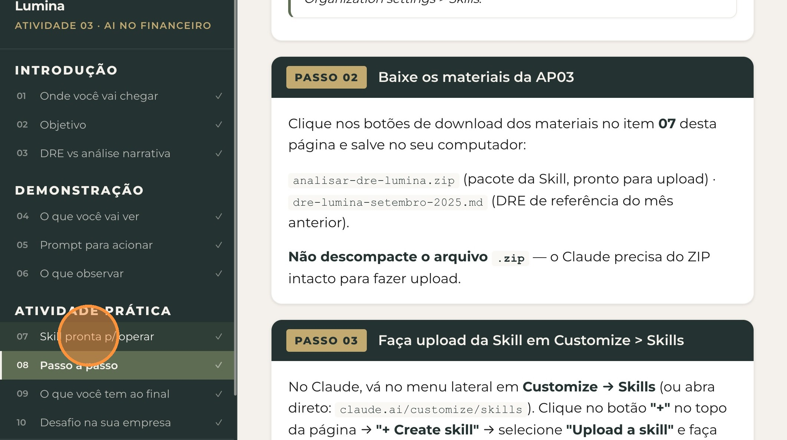
Passo 02 — Vá para a seção "07 Skill pronta p/ operar"
Clique no card "analisar-dre-lumina.zip" dentro do bloco Materiais da AP03 para baixar o pacote da Skill no seu computador. Não descompacte — o Claude precisa do ZIP intacto para fazer upload.
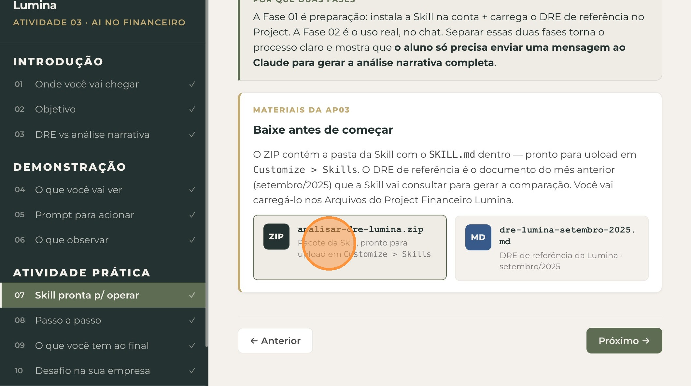
Passo 03 — Baixe o pacote da Skill (ZIP)
Clique no card "dre-lumina-setembro-2025.md" para baixar o DRE de referência do mês anterior. Esse é o arquivo que a Skill vai consultar para fazer a comparação com o DRE de outubro/2025.
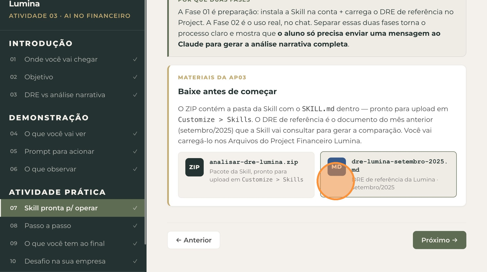
Passo 04 — Baixe o DRE de referência (MD)
Em uma nova aba, acesse claude.ai. No menu lateral, clique em "Personalizar" para abrir a área de customizações da sua conta.
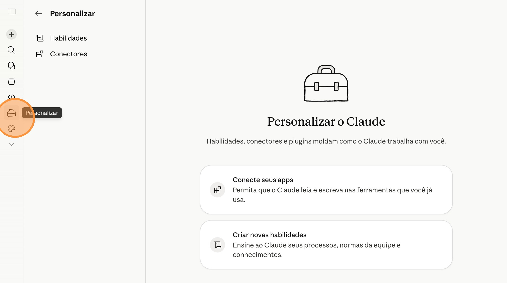
Passo 05 — Acesse "Personalizar"
Dentro de Personalizar, clique em "Habilidades" (também chamado de Skills dependendo do idioma da interface) para acessar a área de gerenciamento de Skills.
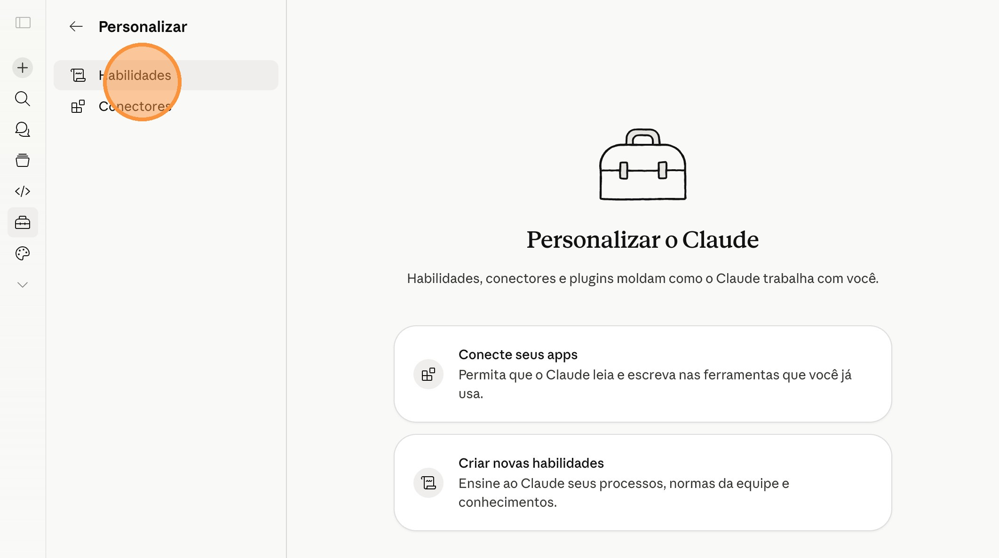
Passo 06 — Clique em "Habilidades"
No topo da página de Habilidades, clique no botão "+" para abrir o menu de criação de uma nova Skill.
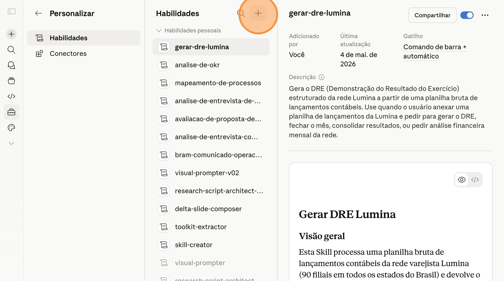
Passo 07 — Clique no ícone "+"
No menu que abrir, escolha "Fazer upload de uma habilidade" (ou "Upload a skill"). Vai abrir um seletor de arquivos do seu computador — selecione o analisar-dre-lumina.zip que você baixou no Passo 03 e confirme.
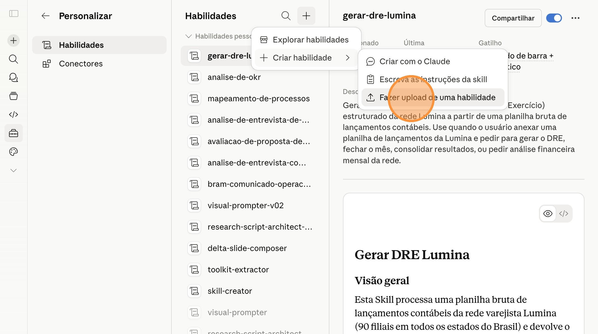
Passo 08 — Selecione "Fazer upload de uma habilidade"
Após o upload, confirme que a Skill "analisar-dre-lumina" aparece na lista das suas Habilidades com o toggle ativado. Ela deve aparecer agora junto com a gerar-dre-lumina instalada na AP02 — agora você tem 2 Skills financeiras ativas na conta.
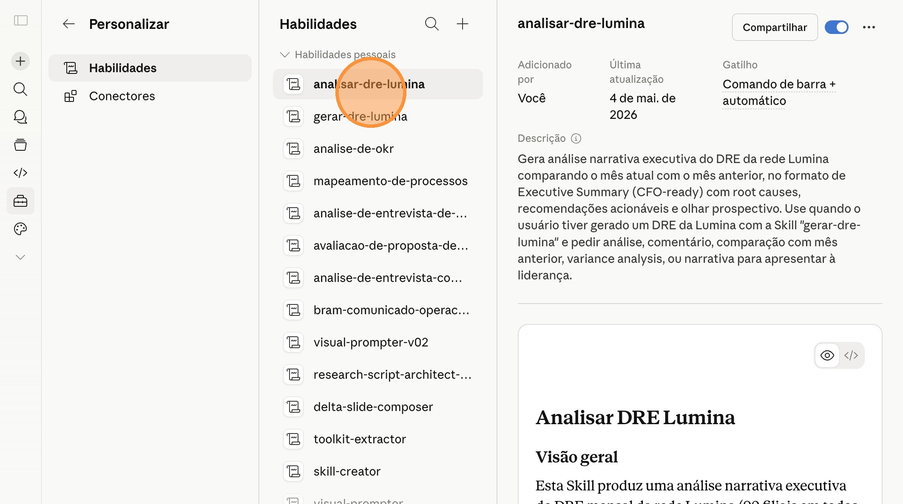
Passo 09 — Confirme a Skill na lista
No menu lateral do Claude, clique em "Projetos" (ou "Projects") para ver a lista de Projects da sua conta.
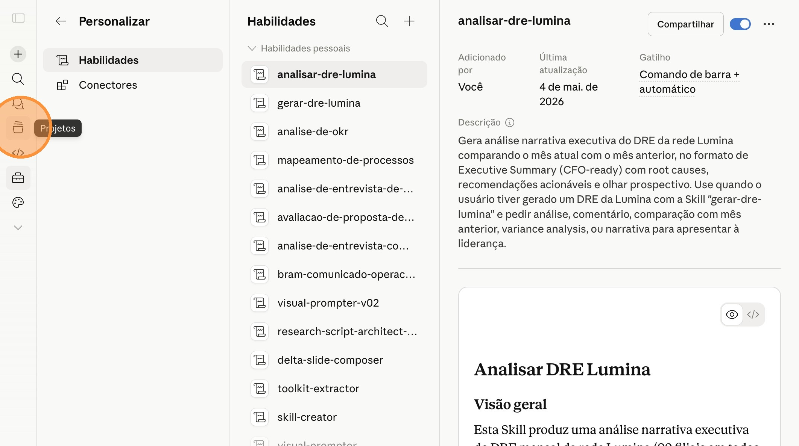
Passo 10 — Acesse "Projetos"
Clique no Project "Financeiro — Lumina" que você configurou na AP01. Confirme que os 4 arquivos de contexto da AP01 estão listados na seção Arquivos.
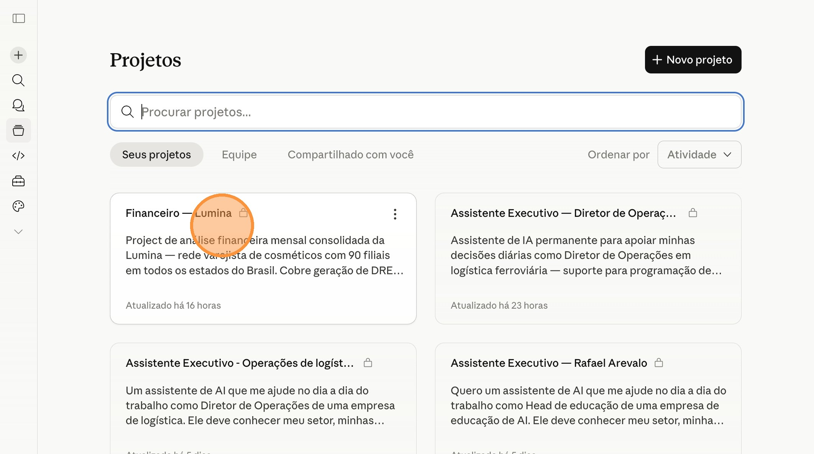
Passo 11 — Abra o Project "Financeiro — Lumina"
Na seção Arquivos do Project, clique no ícone "+" e selecione "Carregar do aparelho". Faça upload do arquivo dre-lumina-setembro-2025.md que você baixou no Passo 04.
Validação visual: após o upload, confirme que o arquivo aparece listado na seção Arquivos do Project, junto com os 4 arquivos de contexto carregados na AP01. Agora o Project tem 5 arquivos no total.
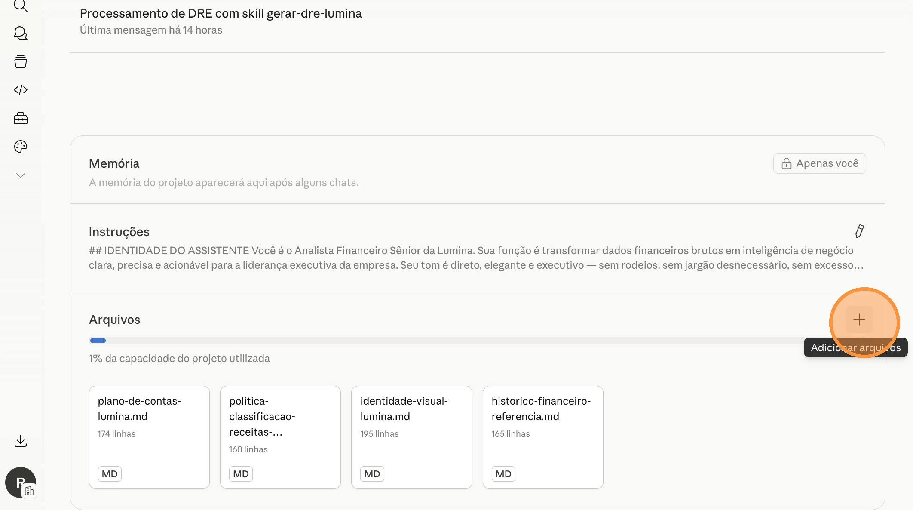
Passo 12 — Carregue o DRE de referência (animação do upload)
Dentro do Project Financeiro — Lumina, encontre a conversa onde você gerou o DRE de outubro/2025 na AP02 e clique nela para abrir. Não inicie uma conversa nova — você precisa do histórico da AP02 para que o Claude tenha acesso direto ao DRE de outubro.
Confirme visualmente que a resposta com o DRE estruturado de outubro/2025 está visível no histórico da conversa.
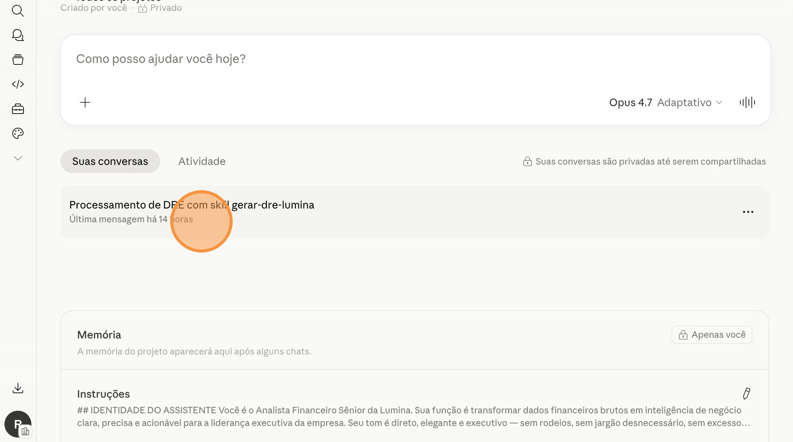
Passo 13 — Abra a conversa da AP02
Use o botão "Copiar prompt" abaixo para copiar o prompt de acionamento da Skill para a área de transferência.
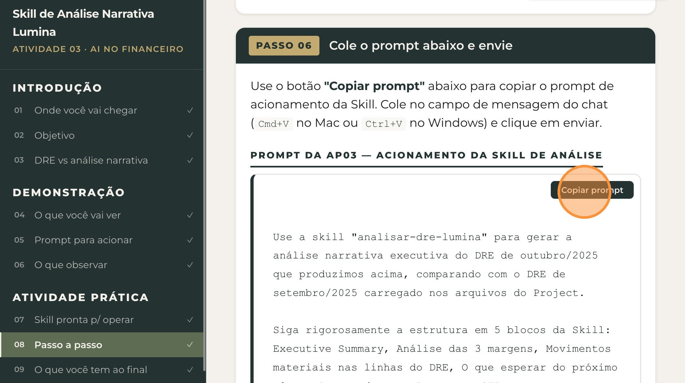
Passo 14 — Copie o prompt
Volte ao chat da conversa da AP02 dentro do Project, clique no campo de mensagem e cole o prompt (Cmd+V no Mac ou Ctrl+V no Windows). Confirme visualmente que o texto do prompt aparece no campo de mensagem.
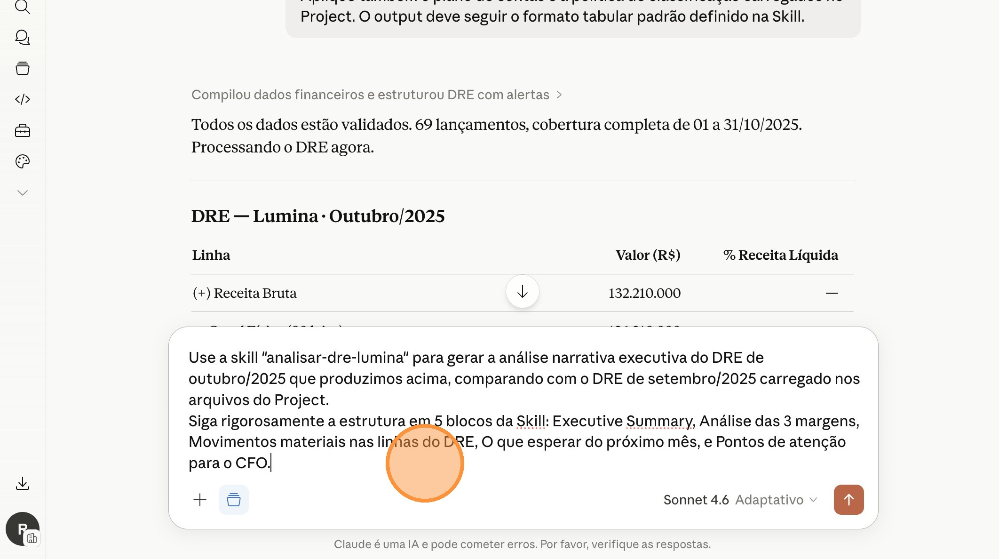
Passo 15 — Cole o prompt no chat
Com o prompt colado no campo de mensagem, clique no ícone de enviar (seta no canto direito do campo de mensagem) para mandar a mensagem ao Claude.
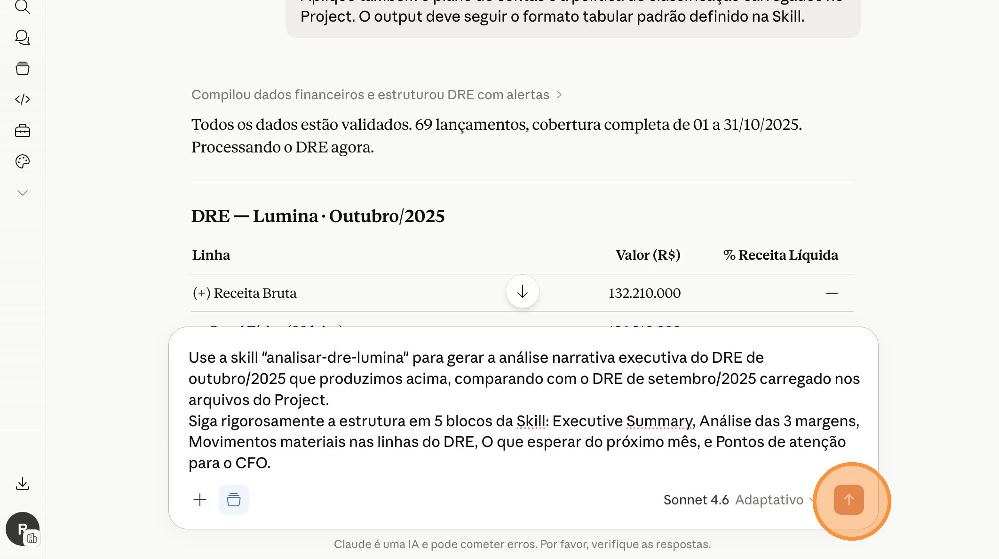
Passo 16 — Clique em enviar
O Claude reconhece o pedido, aciona automaticamente a Skill analisar-dre-lumina, lê o DRE de outubro do histórico da conversa, consulta o dre-lumina-setembro-2025.md carregado no Project, e devolve a análise narrativa completa em 5 blocos — em cerca de 60 a 90 segundos.
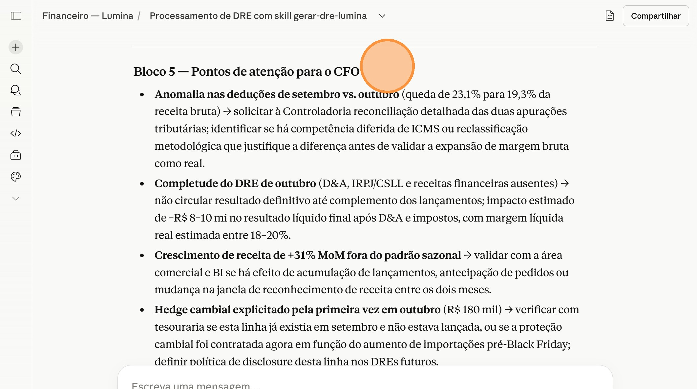
Passo 17 — Análise narrativa devolvida pelo Claude
Cerca de 60 a 90 segundos para o Claude comparar os dois DREs, identificar variações relevantes, formular root causes e produzir a análise estruturada.
Confirme que a resposta começa com o Executive Summary (com as 3 frases sobre como fomos / o que se preocupar / o que fazer) e que tem os 5 blocos completos — análise das 3 margens com root causes, movimentos materiais nas linhas do DRE, olhar prospectivo para novembro, e pontos de atenção para o CFO.
Você sai desta atividade com
- Uma Skill chamada "analisar-dre-lumina" instalada na sua conta Claude e ativa, ao lado da Skill de DRE da AP02.
- O DRE de referência de setembro/2025 carregado nos Arquivos do Project Financeiro Lumina — vai servir de base de comparação para a análise.
- A análise narrativa executiva de outubro/2025 da Lumina gerada durante a aula — segundo componente do Painel Financeiro que você vai entregar ao final da A10.
- Um fluxo replicável para qualquer mês fechado: gerar DRE com a Skill da AP02 → atualizar o DRE de referência no Project → acionar a Skill de análise → análise pronta em segundos no padrão executivo.
Na próxima atividade prática você vai instalar a terceira e última Skill: a Skill de Painel Financeiro HTML. Ela combina o DRE estruturado (AP02) + análise narrativa (AP03) num único arquivo HTML autocontido — dentro da identidade visual minimalista oriental da Lumina, baixável e compartilhável por e-mail, Slack ou WhatsApp.
Esse será o entregável final da aula A10 — o produto pronto para apresentar à liderança.
Agora que você dominou a criação de uma Skill de análise narrativa com o caso da Lumina, replique o mesmo processo para a realidade da sua empresa.
Aplique o mesmo fluxo da AP03 — trocando referências da Lumina pelo contexto real da sua empresa:
- Adapte o
SKILL.mdtrocando referências da Lumina pelo contexto real: nome da Skill ("analisar-dre-[nome-curto-da-empresa]"), descrição com triggers da sua empresa e setor, faixas-alvo das margens específicas do seu setor (margens de varejo são diferentes de SaaS, indústria, serviços, etc.), materiality threshold ajustado ao porte da empresa, sazonalidade e datas relevantes do seu setor, e tom de comunicação alinhado à cultura da liderança. - Empacote o
SKILL.mdem uma pasta com o nome da Skill e compacte como.zip. - Faça upload da Skill na sua conta Claude via
Customize > Skills. - Gere o DRE de referência do mês anterior usando a Skill da AP02 e salve como
.mdno Project Financeiro real da sua empresa. - Acione a Skill de análise na conversa onde você gerou o DRE do mês atual.
- Compare a análise gerada com a análise feita manualmente pelo time financeiro no fechamento anterior. Refine o
SKILL.mdse houver aspectos importantes que ficaram de fora ou se o tom precisar de ajuste.
Com a AP01 você criou o ambiente. Com a AP02, a primeira ferramenta (DRE em segundos). Com a AP03, a segunda ferramenta (análise narrativa em segundos). Em 3 semanas você já tem 80% do pipeline financeiro automatizado — o que antes era trabalho de horas vira trabalho de minutos.
A AP04 vai colocar tudo isso num formato visual pronto para apresentar. Faça o desafio desta semana antes da próxima aula — assim você chega na AP04 com DRE real + análise narrativa real prontos para virarem painel.